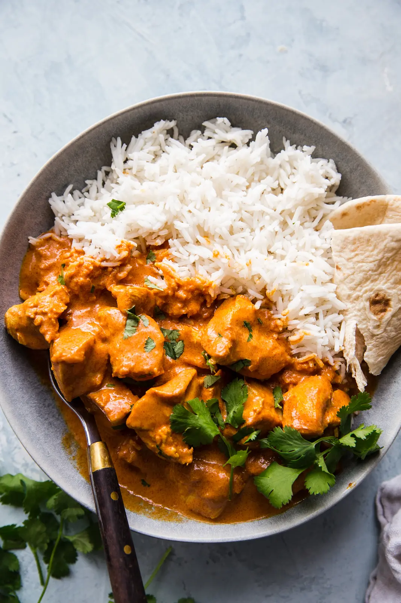

Butter chicken, traditionally known as murgh makhani, an Indian dish which is a type of curry made from chicken with a spiced tomato and butter sauce. Its sauce is known for its rich texture. It is similar to chicken tikka masala, which uses a tomato paste.